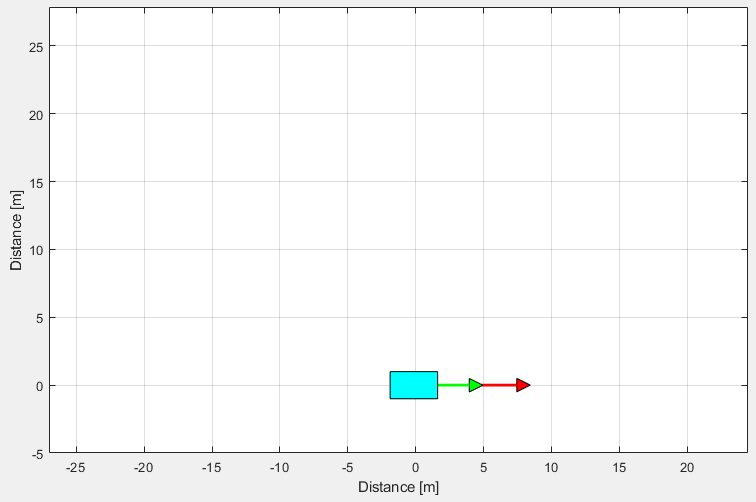
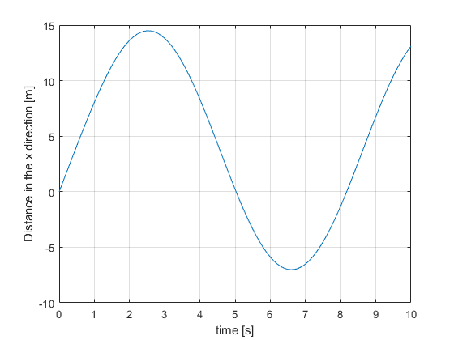
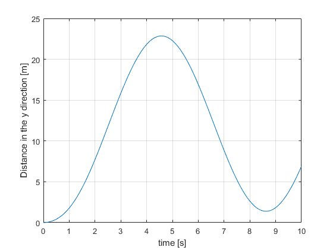
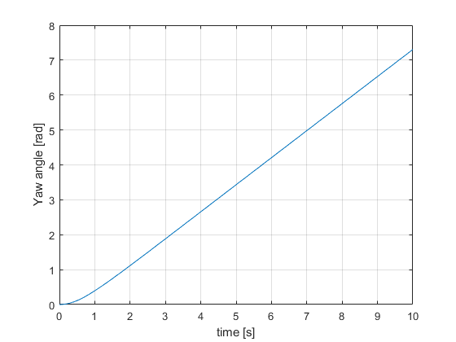
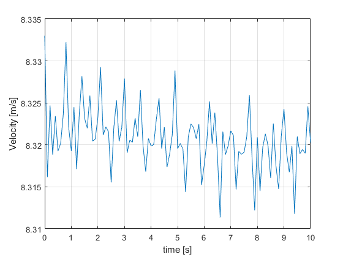
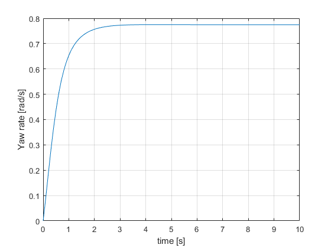
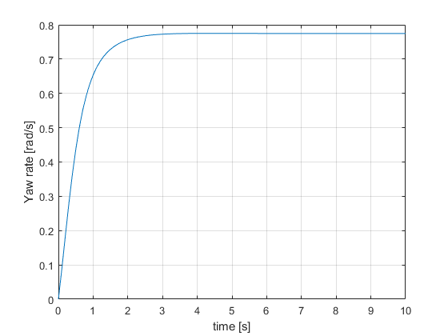
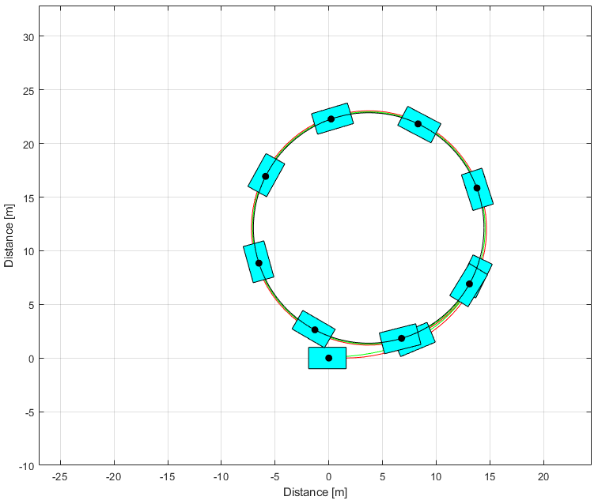
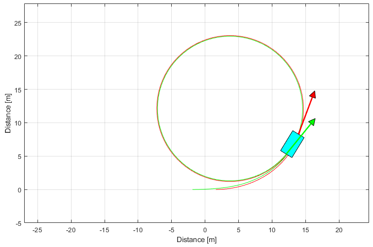

Skid Pad Simple
Maneuver in circles of a nonlinear simple vehicle with Pacejka tire model.

Contents
Code start
clear ; close all ; clc import VehicleDynamicsLateral.*
Model and parameters
Simulation
T = 10; % Total simulation time [s] resol = 100; % Resolution TSPAN = 0:T/resol:T; % Time span [s]
Tire (default)
TireModel = TirePacejka();
Vehicle
System = VehicleSimpleNonlinear(); % Defining vehicle parameters System.mF0 = 700; System.mR0 = 600; System.IT = 10000; System.lT = 3.5; System.nF = 2; System.nR = 2; System.wT = 2; System.muy = 0.8; System.deltaf = 20*pi/180; System.Fxf = 0; System.Fxr = @VelControl; % To keep longitudinal speed.
Simulation
System.tire = TireModel; simulator = Simulator(System, TSPAN); simulator.V0 = 8.333; simulator.Simulate();
Results
% Retrieving states XT = simulator.XT; YT = simulator.YT; PSI = simulator.PSI; VEL = simulator.VEL; ALPHAT = simulator.ALPHAT; dPSI = simulator.dPSI; figure(1) hold on ; grid on ; box on plot(TSPAN,XT) xlabel('time [s]') ylabel('Distance in the x direction [m]') figure(2) hold on ; grid on ; box on plot(TSPAN,YT) xlabel('time [s]') ylabel('Distance in the y direction [m]') figure(3) hold on ; grid on ; box on plot(TSPAN,PSI) xlabel('time [s]') ylabel('Yaw angle [rad]') figure(4) hold on ; grid on ; box on plot(TSPAN,VEL) xlabel('time [s]') ylabel('Velocity [m/s]') figure(5) hold on ; grid on ; box on plot(TSPAN,ALPHAT) xlabel('time [s]') ylabel('Vehicle slip angle [rad/s]') figure(6) hold on ; grid on ; box on plot(TSPAN,dPSI) xlabel('time [s]') ylabel('Yaw rate [rad/s]')   
 
 Graphics
Frame and animation
g = Graphics(simulator); g.TractorColor = 'c'; g.Frame(); angulo = 0:0.01:2*pi; [R,XC,YC] = circfit(XT(40:end),YT(40:end)); XX = XC + R*cos(angulo); YY = YC + R*sin(angulo); hold on plot(XX,YY,'k') g.Animation(); % g.Animation('html/SkidPadSimple'); % Uncomment to save animation gif 
Maneuver radius
disp(num2str(R))
10.7397